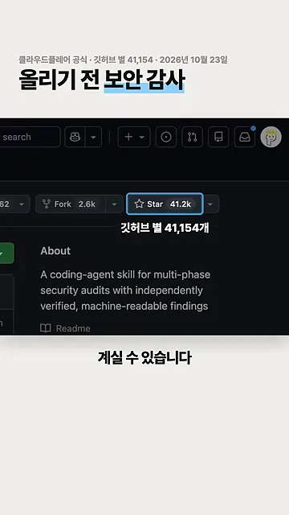
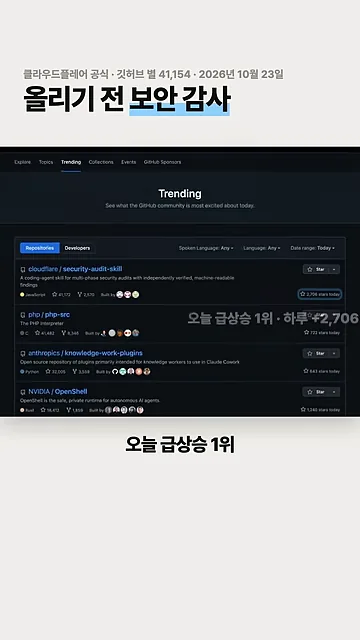
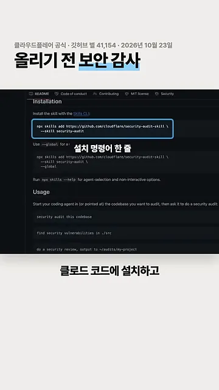
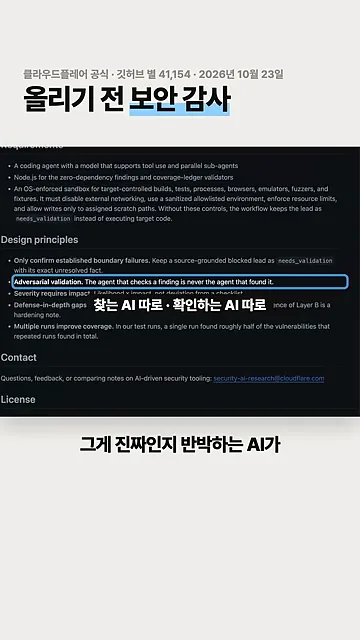
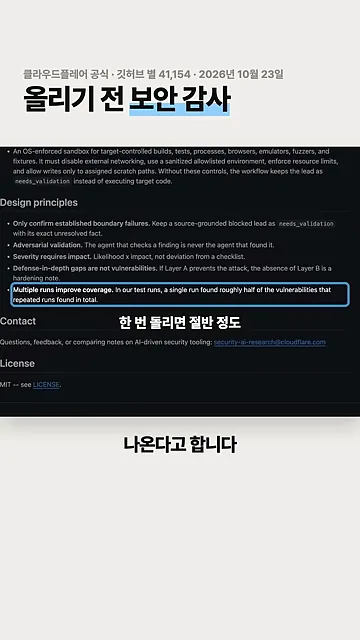
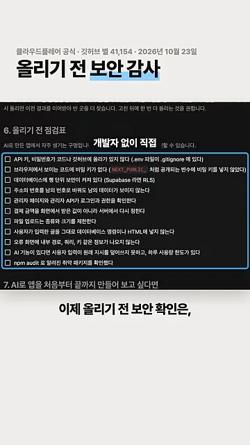

클라우드플레어가 공개한 보안 감사 스킬
AI로 앱을 만들면 돌아가는 화면은 금방 나와요. 하지만 그 코드에 보안 구멍이 있는지는 따로 확인하지 않으면 모른 채 배포하게 돼요. 영상은 이 문제에 대한 답으로 클라우드플레어가 공개한 보안 감사 스킬 하나를 소개해요.
화면에 뜬 저장소는 cloudflare/security-audit-skill이에요. 오른쪽 위 Star 버튼에 41.2k가 찍혀 있고, About 칸에는 '여러 단계로 보안 감사를 하고, 찾은 결과를 따로 검증해서 기계가 읽을 수 있는 형태로 내놓는 코딩 에이전트용 스킬'이라고 적혀 있어요.

영상은 이 스킬이 클라우드플레어가 원래 자기 코드를 검사할 때 쓰던 것이라고 말해요. 화면에는 클라우드플레어 블로그의 'It all starts with a skill' 대목이 잠깐 지나가요. 그리고 깃허브 Trending 화면으로 넘어가, 이 저장소가 그날 급상승 1위였다는 걸 보여 줘요.

설치하고, 나눠서 검증하고, 여러 번 돌려요
쓰는 법은 두 단계예요. Claude Code 같은 코딩 에이전트에 스킬을 설치하고, 검사할 코드가 있는 폴더에서 '보안 감사해 줘'라고 말하면 돼요. 화면의 파란 상자가 설치 명령어 한 줄이에요.

npx skills add https://github.com/cloudflare/security-audit-skill \
--skill security-auditREADME의 요청 예시는 영어(security audit this codebase)지만, 영상은 한국어로 '보안 감사해 줘'라고 말해도 된다고 소개해요.
찾는 AI와 반박하는 AI를 나눠요
영상이 이 스킬의 핵심으로 꼽는 건 역할 분리예요. 구멍을 찾는 AI와, 그게 진짜 구멍인지 반박해 보는 AI가 따로 일해요. 찾은 쪽이 자기 답을 스스로 채점하지 못하게 막은 거예요. 화면에서 강조된 줄이 README의 Adversarial validation 원칙이에요.

flowchart LR A["코드"] --> B["찾는 AI"] B --> C["구멍 후보"] C --> D["반박하는 AI"] D -->|"반박 못 함"| E["진짜 구멍"] D -->|"반박됨"| F["버림"]
한 번으로는 절반만 나와요
영상이 꼭 기억하라고 하는 숫자가 하나 있어요. 한 번만 돌리면, 여러 번 돌려서 모은 구멍의 절반 정도만 나온다는 거예요. 그래서 두 번 이상 돌려 보라고 권해요. 화면에 강조된 Multiple runs improve coverage 줄이 그 근거예요.

라이선스는 MIT라서 무료로 쓸 수 있는 오픈소스예요.
올리기 전 점검표 11가지
영상 끝에서는 채널이 따로 만든 '올리기 전 점검표'가 화면에 지나가요. 스킬을 돌리기 전에도 직접 확인할 수 있는, AI로 만든 앱에서 자주 생기는 구멍 열한 가지예요.

- API(Application Programming Interface) 키나 비밀번호가 코드나 깃허브에 올라가 있지 않나요? (
.env파일이.gitignore에 있어야 해요) - 브라우저에서 보이는 코드에 비밀 키가 없나요? (
NEXT_PUBLIC_처럼 공개되는 변수에 비밀 키를 넣지 않았어야 해요) - 데이터베이스에 행 단위 보안이 켜져 있나요? (Supabase라면 RLS(Row Level Security))
- 주소의 번호를 남의 번호로 바꿔도 남의 데이터가 안 보이나요?
- 관리자 페이지와 관리자 API가 로그인과 권한을 확인하나요?
- 결제 금액을 화면에서 받은 값이 아니라 서버에서 다시 정하나요?
- 파일 업로드의 종류와 크기를 제한했나요?
- 사용자가 입력한 글을 그대로 데이터베이스 명령이나 HTML(HyperText Markup Language)에 넣지 않나요?
- 오류 화면에 내부 경로, 쿼리, 키 같은 정보가 안 나오나요?
- AI 기능이 있다면 사용자 입력이 원래 지시를 덮어쓰지 못하고, 하루 사용량 한도가 있나요?
npm audit로 알려진 취약 패키지를 확인했나요?
영상의 결론은 단순해요. 올리기 전 보안 확인은 이제 개발자에게 맡기지 않아도, 이 스킬을 직접 두 번 이상 돌려 보면 된다는 거예요.